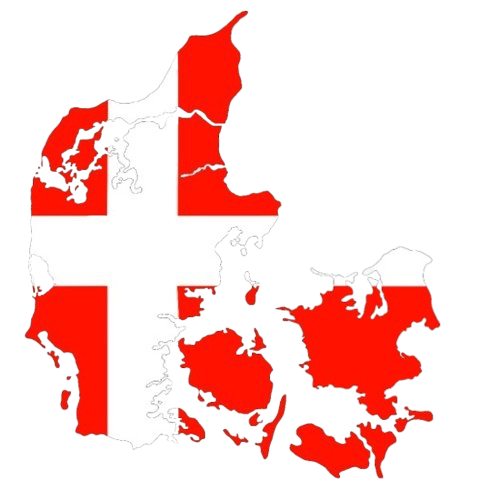

Danemark
Au cours de mon voyage, je suis passée par le Danemark 2 fois : une fois à l'aller, nous nous sommes alors arrétées à Copenhague pour voir notre amie Clara. puis au retour nous avont juste traversé le danemark pour aller de Götteborg à Berlin